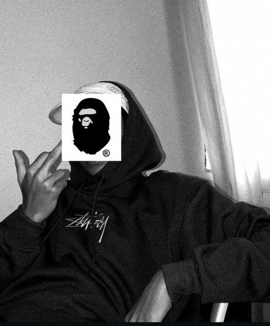
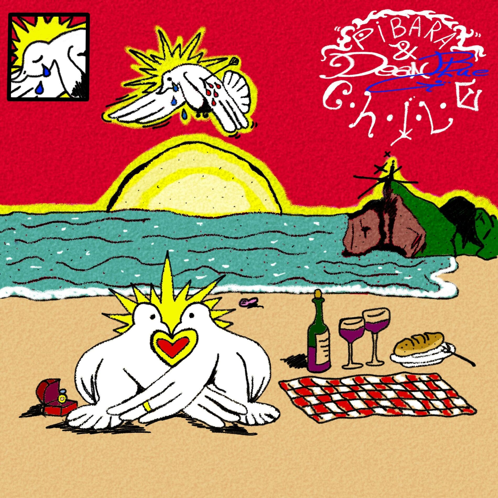
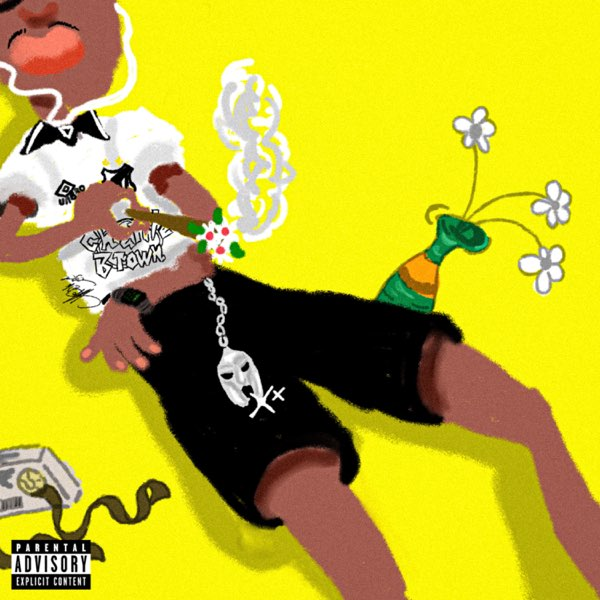
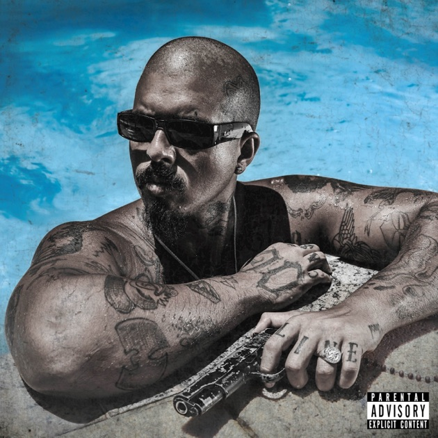
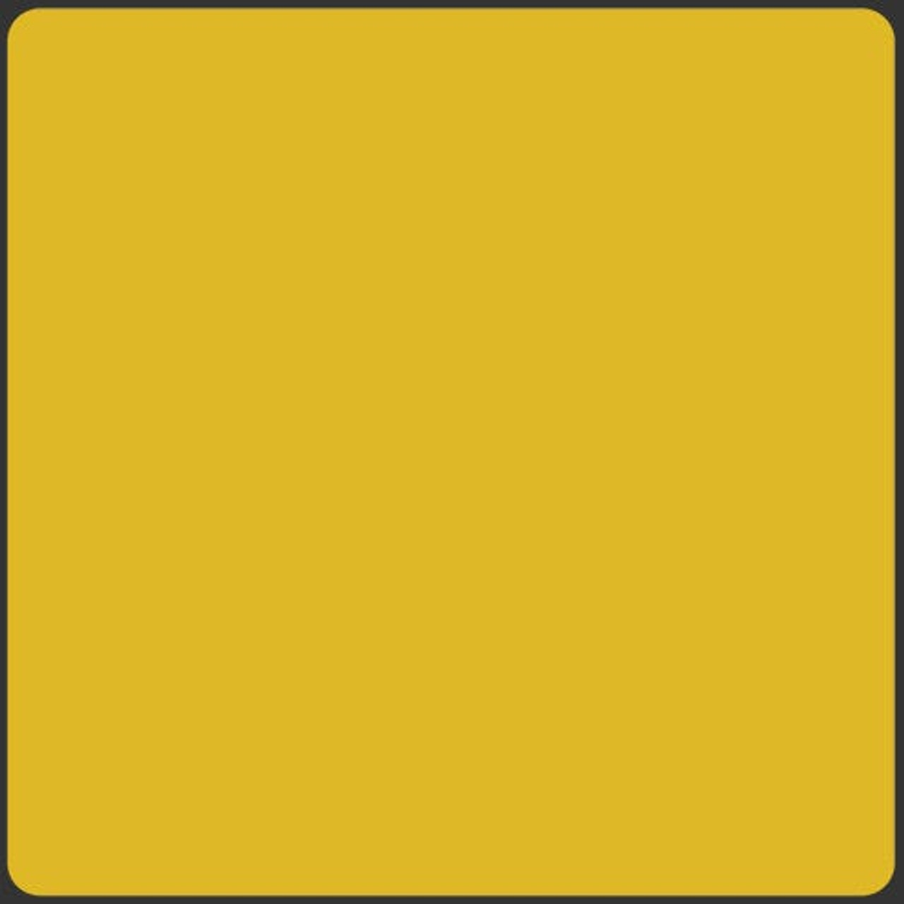
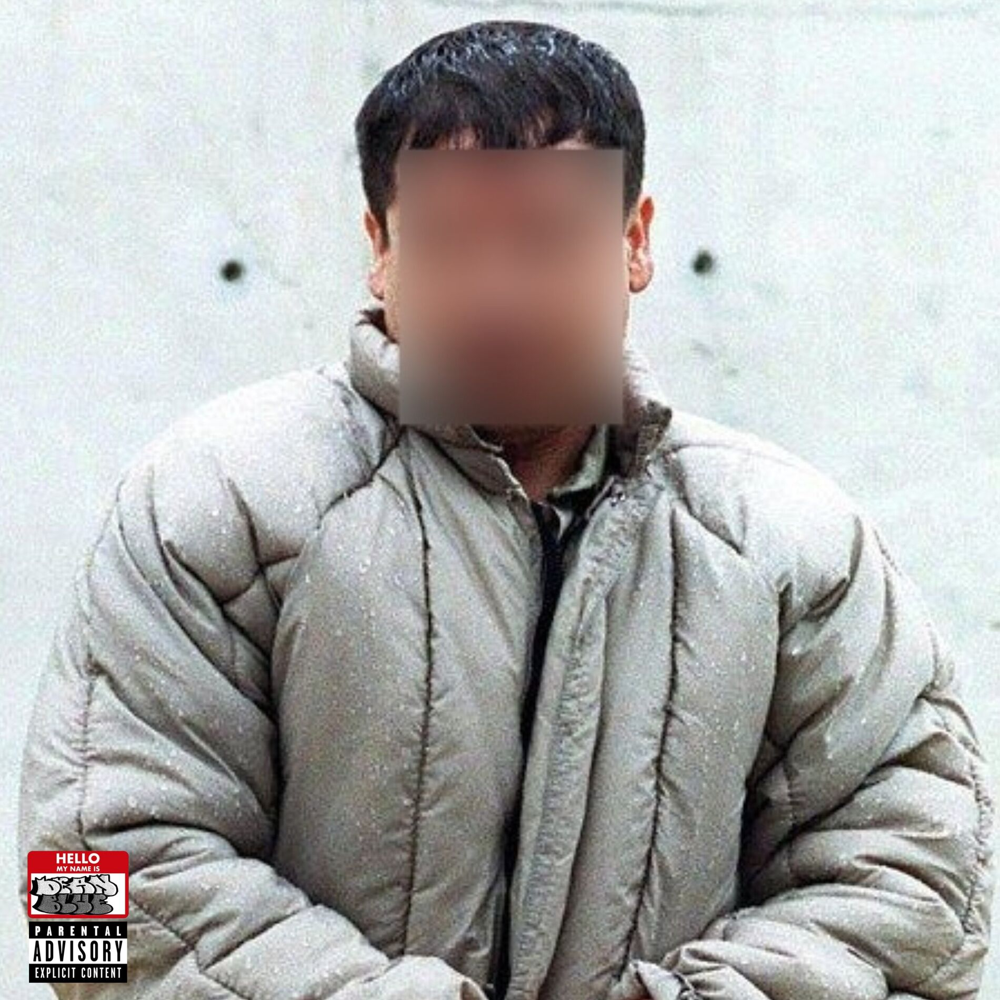
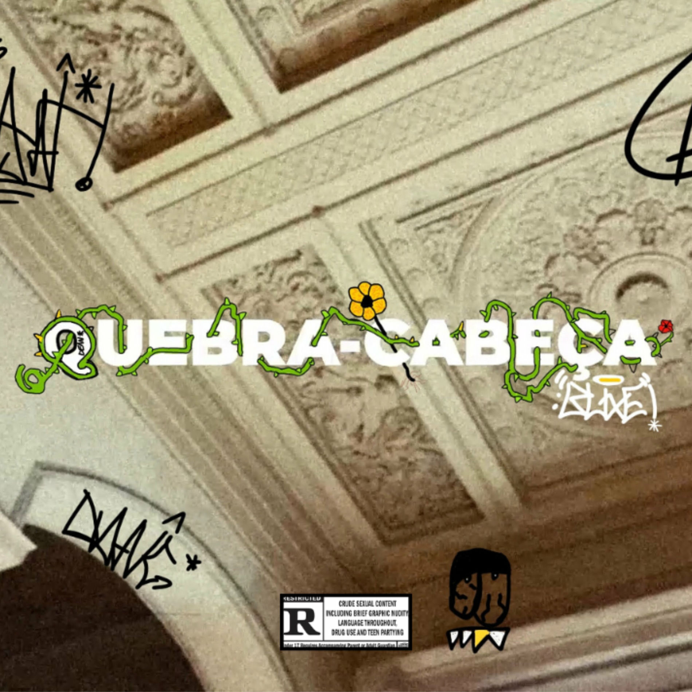
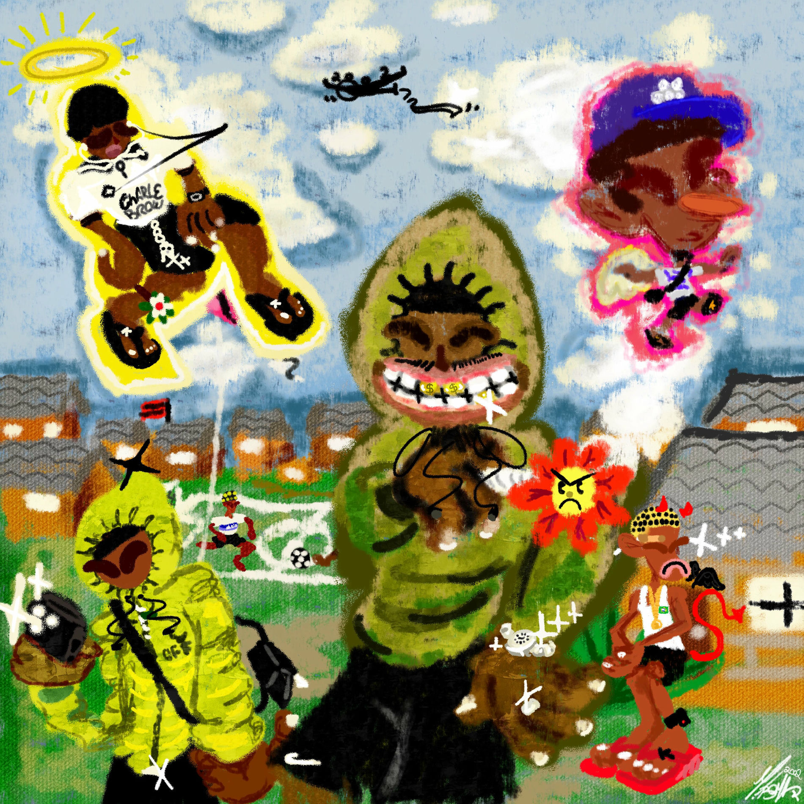

Dean Blue
Rapper, Escritor e Produtor
Popular

Chile

Outras 7

Dois Senhores

Esquinas

Conheço um Muchacho

Quebra-Cabeça
Discografia

AlterEgo
EP · 2025
Peacemode
EP · 2024
Sobre
DeanBlue é um rapper, compositor e produtor underground nascido e criado no subúrbio da Baixada Fluminense, Rio de Janeiro. Com apenas 16 anos entrou no mundo da música. Com uma identidade sonora autêntica e marcante, ele transforma suas vivências, o cotidiano e os sentimentos internos em rimas que ressoam com seu público.